Outline
- Continuous Random Variables
- How Heavy is a Tree?
- Probability Density
- Distribution Properties
- Representing Distributions
A Note on Integrals
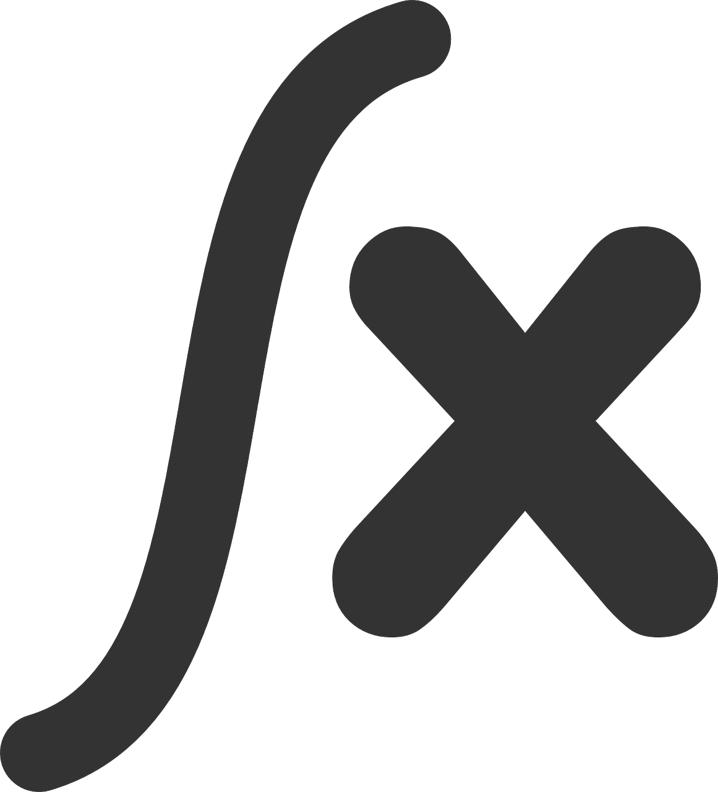
- Working with continuous random variables sometimes involves integrating some functions.
- However, the most we will ever ask you to integrate are basic mathematical functions.
Heads-up: The scope of these upcoming lectures is to understand probability concepts via continuous random variables rather than advanced Calculus.
1. Continuous Random Variables

What is the current water level of the Bow River at Banff, Alberta?
What about the current atmospheric temperature in Vancouver, BC?
All the previous questions pertain to continuous cases!
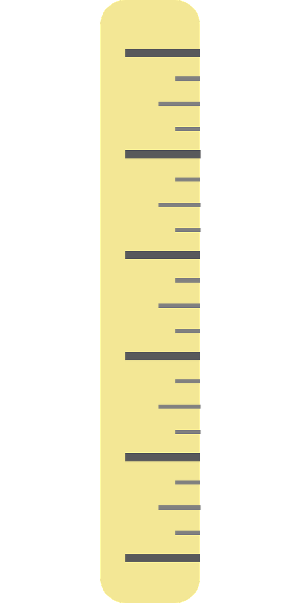
- A continuous random variable has uncountably infinite amount of outcomes.
- Consider the variable continuous if the difference between neighbouring values is not a big deal.
A First Example
- You record your total monthly expenses each month.
- You end up with 20 months worth of data.
[1] "$1903.68" "$3269.61" "$6594.05" "$1693.94" "$2863.71" "$3185.01"
[7] "$4247.04" "$2644.27" "$8040.42" "$2781.11" "$3673.23" "$4870.13"
[13] "$2449.53" "$1772.53" "$7267.11" "$938.67" "$4625.33" "$3034.81"
[19] "$4946.4" "$3700.16"
- A difference of \(\$0.01\) is not a big deal, thus we may treat this as a continuous random variable: \[X = \text{Total monthly expenses.}\]
A Second Example

- Back in the day when Canada had pennies, some people liked to play “penny bingo”, which involves winning and losing pennies.
- Here are your 10 net winnings:
[1] 0.01 -0.01 0.02 0.01 0.04 0.02 -0.03 -0.01 0.05 0.04
- Since a difference of a penny \(\$0.01\) is a big deal, it is best to treat this as discrete.
2. How Heavy is a Tree?
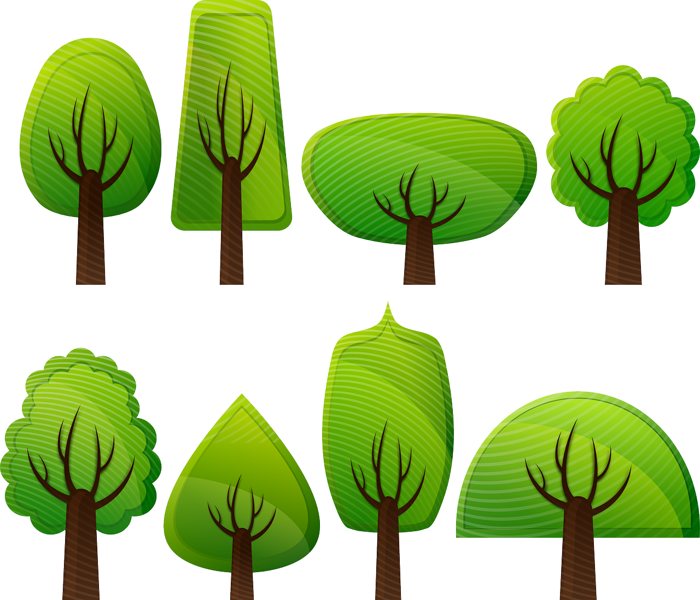
- It depends on how tall the tree is!
- Let us say the tree is \(5 \text{ m}\) tall. How heavy is it?
- Not all \(5 \text{ m}\) trees are the same weight – is the tree broad or thin?
- We cannot just say something like:
“Every meter of the tree weighs \(500 \text{ kg}\).”
We have a density instead!
- The density of the tree, measured in \(\text{kg/m}\), is a function that varies as you move up the tree.
- You can think of it as the weight of an infinitely thin slice of tree, divided by the thickness of that slice.
Graphically!
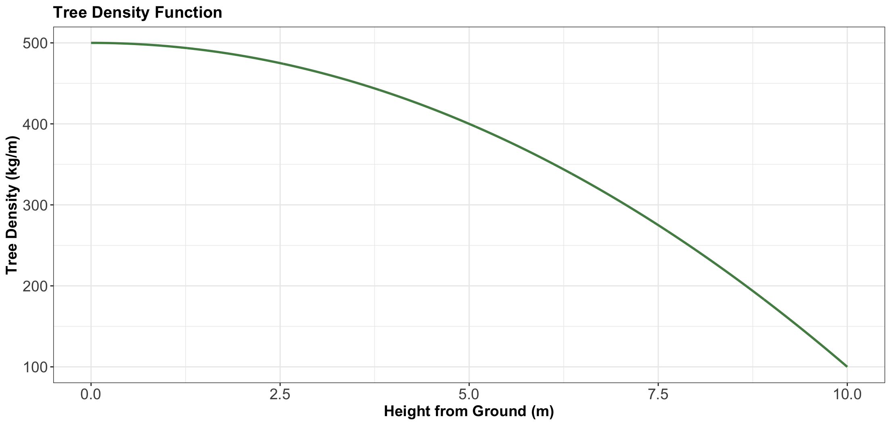
What if we want to obtain the total weight of the tree?
- We would take the integral of the density function \(f(x)\):
\[\int_0^{10} f(x) \text{d}x.\]
What if I asked you how much the tree weighs at a height equal to \(5 \text{ m}\)?
- The tree only has a density at a height equal to \(5 \text{ m}\)!
The tree weight at \(5 \text{ m}\) is equal to zero!
- The weight between heights \(a\) and \(b\) is
\[\int_a^b f(x) \text{d}x.\]
- Thus, the weight at \(x = 5 \text{ m}\) is
\[\int_5^5 f(x) \text{d}x = 0.\]
We need to get the weight of the tree in an interval between two different heights \(a\) and \(b\)
- For the total weight, we have to obtain \(\int_{a = 0}^{b = 10} f(x) \text{d}x\).
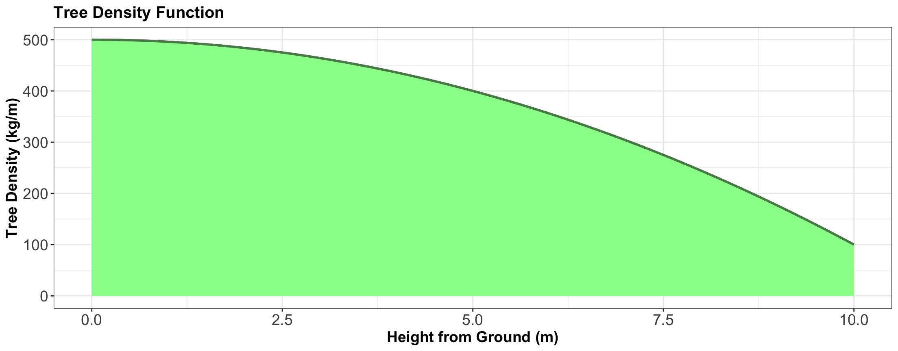
3. Probability Density
- Let us consider a continuous random variable:
\[X = \text{Height of a person in meters.}\]
- Then, we have a probability density \(f_X(x)\) (in “probability per meter”) of heights.
Computing Probabilities
- We can compute the probability that a randomly selected person is between \(1.5\) and \(1.6 \text{ m}\):
\[P(1.5 \leq X \leq 1.6) = \int^{1.6}_{1.5} f_X(x) \text{d}x.\]
3.1. A Note on Units
- Technically, in the height case, the density \(f_X(x)\) has units of \(1/\text{m}\) or, equivalently, \(\text{m}^{-1}\).
- For instance, what is the probability that a person’s height is between \(x = 1 \text{ m}\) and \(x = 2 \text{ m}\)? \[P(1 \leq X \leq 2) = \int_1^2 f_X(x) \text{d}x,\]
- Recall, \(\text{d}x\) is an infinitely tiny interval of \(x\), measured in metres.
In general…
- \(f_X(x)\) is the probability density function (PDF).
- We can use the PDF to calculate probabilities of a range: \[P(a < X < b) = \int_a^b f_X(x) \text{d}x.\]
- Integrating over the entire range of possibilities for the random variable \(X\): \[\int_{-\infty}^\infty f_X(x) \text{d}x = 1.\]
3.2. Probability of a Particular Value
- Let us answer the following question:
What is the probability that a person is 1.5 meters tall?
- That is \(1.5000000000\ldots \text{ m}\).
- Just like the weight of a tree at a height equal to \(5 \text{ m}\), this is \(0\).
- But we can ask for the probability of a range of heights!
3.3. Example: Low Purity Octane
- You just ran out of gas, but luckily, right in front of a gas station!
- Or maybe not so lucky, since the gas station is called “Low Purity Octane.”

Let us check the PDF!
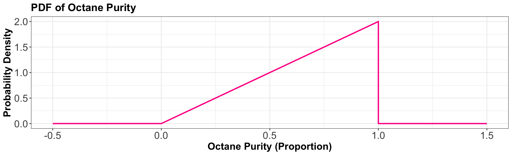
\[X = \text{Octane purity as a proportion.}\] \[
f_X(x) =
\begin{cases}
2x \quad \text{for} \quad 0 \leq x \leq 1 \\
0 \quad \text{elsewhere.}
\end{cases}
\]
In-Class Question

Using the PDF, what is the probability of getting 25% purity? That is,
\[P(X = 0.25).\]
\[
f_X(x) =
\begin{cases}
2x \quad \text{for} \quad 0 \leq x \leq 1 \\
0 \quad \text{elsewhere.}
\end{cases}
\]
In-Class Question

The PDF evaluates to be \(> 1\) in some places on the vertical axis. Does this mean that this is not a valid density? Why is the density in fact valid?
iClicker Question
Using the PDF, what is the probability of getting gas that is \(< 50\%\) pure? That is, \(P(X < 0.5)\).
\[
f_X(x) =
\begin{cases}
2x \quad \text{for} \quad 0 \leq x \leq 1 \\
0 \quad \text{elsewhere.}
\end{cases}
\]
Select the correct option:
A. 0.75
B. 0.1
C. 0.25
D. 0.5
iClicker Question

What is the probability of getting gas that is \(\leq 50\%\) pure? That is, \(P(X \leq 0.5)\).
Select the correct option:
A. 0.25
B. 0.249
C. 0.749
D. 0.75
4. Distribution Properties
- With continuous random variables, it becomes easier to expand our “toolkit.”
- This “toolkit” refers to how we describe a distribution or random variable using different central tendency and uncertainty measures.

4.1. Mean, Variance, Mode, and Entropy
- The central tendency and uncertainty measures still apply in the continuous cases, but with slight variations.
- Mode and entropy are not heavily used.

Mode and Entropy
- The mode is the outcome having the highest density. That is, for a continuous random variable \(X\) with PDF \(f_X(x)\): \[\text{Mode} = {\arg \max}_x f_X(x).\]
- The entropy can be defined by replacing the sum in the finite case with an integral: \[H(X) = -\int_x f_X(x) \log [f_X(x)] \text{d}x.\]
Mean and Variance
- The mean is a central tendency measure: \[\mathbb{E}(X) = \int_x x \, f_X(x) \text{d}x.\]
- The variance is an uncertainty measure. Let \(\mu_X\) be \(\mathbb{E}(X)\), this measure is defined as: \[\begin{align*}
\text{Var}(X) &= \mathbb{E}[(X - \mu_X)^2] = \int_x (x - \mu_X) ^ 2 \, f_X(x) \text{d}x \\
&= \mathbb{E}(X^2) - [\mathbb{E}(X)]^2
\end{align*}\]
Going back to the “Low Purity Octane” gas station!
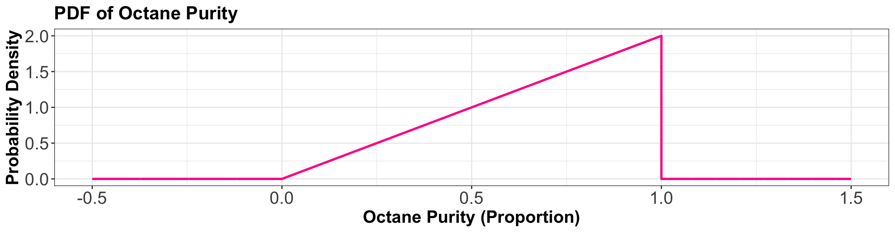
- The mode is \(\text{Mode}(X) = {\arg \max}_x f_X(x) = 1\).
- The entropy works out to be
\[H(X) = -\int_0^1 2x \log(2x) \text{d}x \approx -0.1931.\]
More common measures…
- The mean ends up being not a very good purity (especially as compared to the mode!), and is
\[\mathbb{E}(X) = \int_0^1 2x^2 \text{d}x = \frac{2}{3} = 0.66.\]
- The variance ends up being
\[\text{Var}(X) = \int_0^1 2 x \left(x - \frac{2}{3}\right)^2 \text{d}x = \frac{1}{18} = 0.056.\]
Going back to the “Low Purity Octane” gas station!
\[\begin{align*}
P[X \leq \text{M}(X)] &= 0.5 = \int_0^{\text{M}(X)} f_X(x) \text{d}x = \int_0^{\text{M}(X)} 2x \text{d}x \\
&= x^2 \Big|_{0}^{\text{M}(X)} = [\text{M}(X)]^2.
\end{align*}\]
\[\begin{gather*}
[\text{M}(X)]^2 = 0.5 \\
\text{M}(X) = \sqrt{0.5} = 0.7071.
\end{gather*}\]
Graphically…
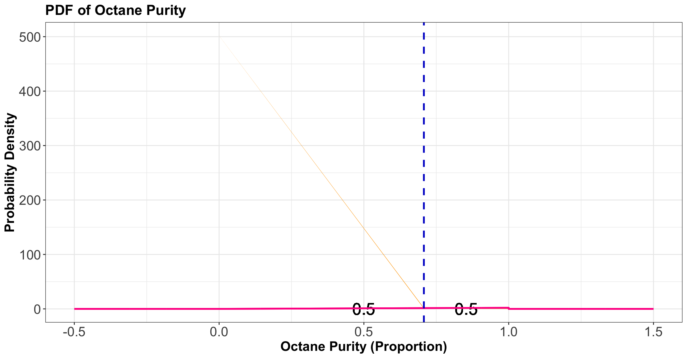
4.3. Quantiles
- More general than a median is a quantile.
- The definition of a \(p\)-quantile \(Q(p)\) is the outcome with a probability \(p\) of getting a smaller outcome:
\[P[X \leq Q(p)] = p.\]
- The median is a special case, and is the \(0.5\)-quantile.
Going back to the “Low Purity Octane” gas station for the \(0.25\)-quantile!
\[\begin{align*}
P[X \leq Q(0.25)] &= 0.25 = \int_0^{Q(0.25)} f_X(x) \text{d}x = \int_0^{Q(0.25)} 2x \text{d}x \\
&= x^2 \Big|_{0}^{Q(0.25)} = [Q(0.25)]^2.
\end{align*}\]
\[\begin{gather*}
[Q(0.25)]^2 = 0.25 \\
Q(0.25) = \sqrt{0.25} = 0.5.
\end{gather*}\]
Graphically…
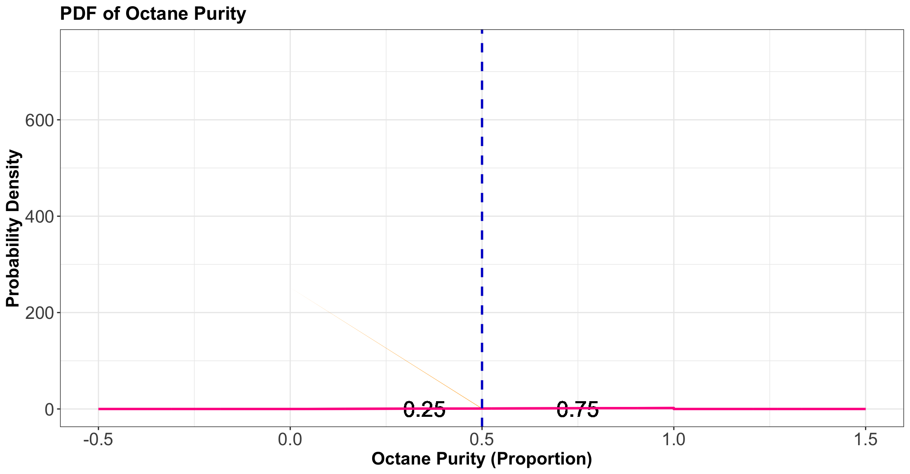
4.4. Prediction Intervals
- It is often useful to communicate an interval for which a random outcome will fall in with a pre-specified probability \(p\).
- Such an interval is called a \(p \times 100\%\) prediction interval.
- You can calculate the lower limit of this interval as the \(\frac{1 - p}{2}\)-quantile and the upper limit as the \(\frac{1 + p}{2}\)-quantile.
Going back to the “Low Purity Octane” gas station!
- A 90% prediction interval for the purity of gasoline is \([0.2236, 0.9746]\), composed of the \(0.05\) and \(0.95\)-quantiles.
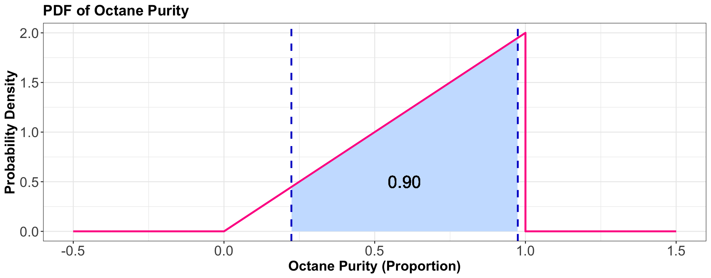
4.5. Skewness
- Skewness measures how “lopsided” a distribution is, as well as the direction of the skew:
- If the density is symmetric about a point, then the skewness is 0.
- If the density is more “spread-out” towards the right/positive values, then the distribution is said to be right-skewed (positive skewness).
- If the density is more “spread-out” towards the left/negative values, then the distribution is said to be left-skewed (negative skewness).
Going back to the “Low Purity Octane” gas station!
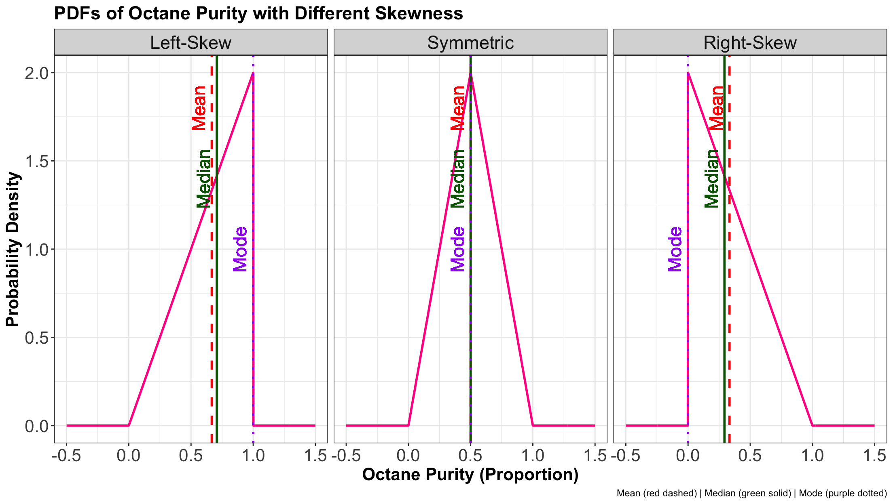
5. Representing Distributions
- There are more ways we can represent a distribution besides the probability mass function (PMF) or PDF.
- Keep in mind that all of these representations capture everything about a distribution.
5.1. Cumulative Distribution Function
- The cumulative distribution function (CDF) is defined as
\[F_X(x) = P(X \leq x).\]
- We can calculate this using a density \(f(\cdot)\) by
\[F_X(x) = \int_{-\infty}^x f_X(t) \, \text{d}t.\]
- The CDF has no units because it evaluates to a probability.
Let us introduce another example!
- Again, you would like to get a handle on your monthly finances.
- It turns out your monthly expenses have the following PDF:
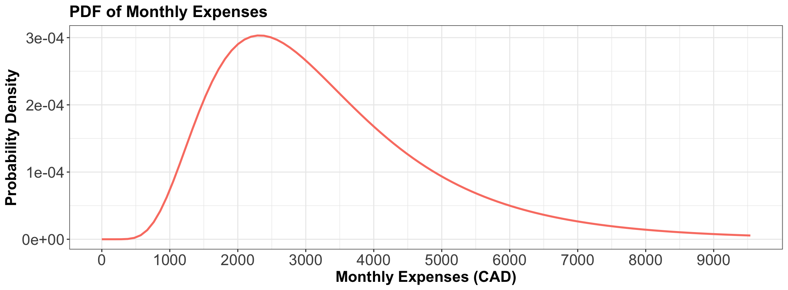
Comparing Different CDFs
- The CDF is still defined for discrete random variables but has a jump-discontinuity at the discrete values!
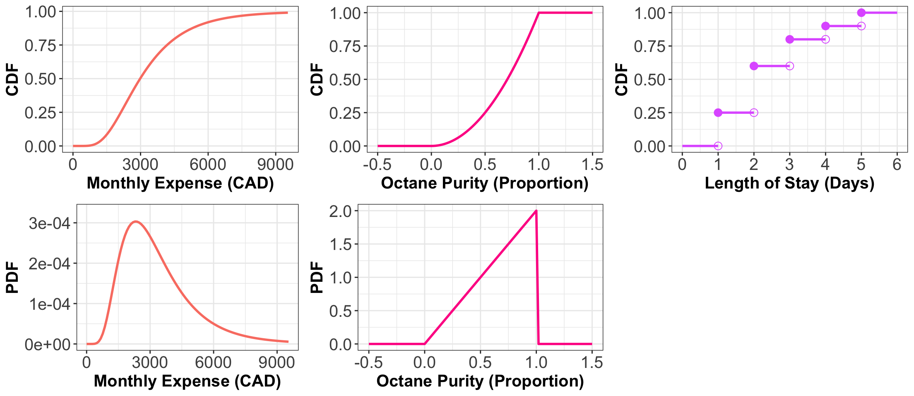
What Makes a Valid CDF?
- Must never decrease.
- It must never evaluate to be \(< 0\) or \(> 1\).
- \(F_X(x) \rightarrow 0\) as \(x \rightarrow -\infty\).
- \(F_X(x) \rightarrow 1\) as \(x \rightarrow \infty\).
Probability that \(X\) is Between \(a\) and \(b\)
- We established that the probability of \(X\) being between \(a\) and \(b\) is \[P(a \leq X \leq b) = \int_a^b f_X(x)\text{d}x.\]
- Connecting the dots via CDFs: \[\begin{align*}
P(a \leq X \leq b) &= P(X \leq b) - P(X \leq a) \\
&= F_X(b) - F_X(a) \\
&= \int_{-\infty}^b f_X(x) \, \text{d}x - \int_{-\infty}^a f_X(x) \, \text{d}x=\int_{a}^b f_X(x) \, \text{d}x.
\end{align*}\]
5.2. Survival Function
- It is the CDF “flipped upside down”:
\[S_X(x) = P(X > x) = 1 - F_X(x).\]
- The name comes from Survival Analysis, where \(X\) is interpreted as a “time of death”, so that the survival function is the probability of surviving beyond \(x\).
Comparing Different Survival Functions
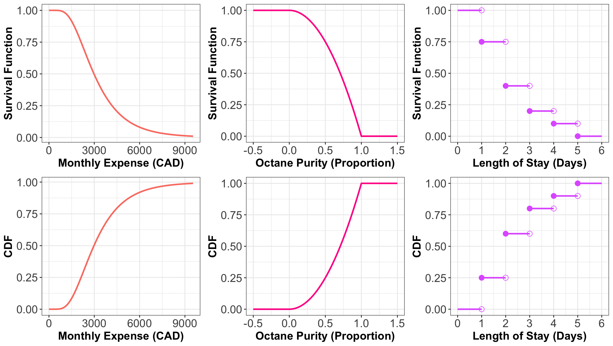
5.3. Quantile Function
The quantile function \(Q(\cdot)\) takes a probability \(p\) and maps it to the \(p\)-quantile.
It turns out that this is the inverse of the CDF: \[Q(p) = F^{-1}(p).\]
Note that this function does not exist outside of \(0 \leq p \leq 1\)!
Comparing Different Quantile Functions
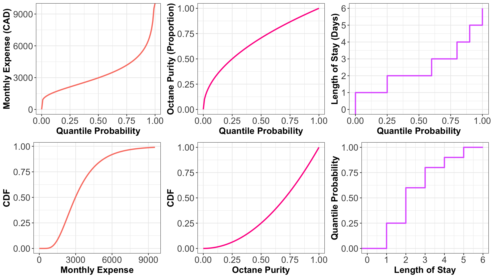
iClicker Question
Let \(X = \text{Octane purity as a proportion}\). Its CDF is:
\[F_X(x) =
\begin{cases}
0, \: x < 0\\
x^2, \: 0 \leq x \leq 1, \\
1, \: x > 1.
\end{cases}
\]
Thus, what is \(P(0.5 \leq X \leq 0.75)\)? Select the correct option:
A. 0.25
B. 0.69
C. 0.75
D. 0.31
iClicker Question
Using the CDF
\[F_X(x) =
\begin{cases}
0, \: x < 0\\
x^2, \: 0 \leq x \leq 1, \\
1, \: x > 1.
\end{cases}
\]
What is \(P(X > 0.75)\)?
A. 0.56
B. 0.85
C. 0.44
D. 0.15
iClicker Question
Answer TRUE or FALSE:
Let \(X\) be a continuous random variable whose PDF is \(f_X(x)\). Knowing the PDF of \(X\) means that we also know the CDF \(F_X(x),\) but knowing the CDF does not imply knowing the density.
A. TRUE
B. FALSE
](https://mermaid.live/edit#pako:eNp1U9tu2zAM_RVBTw7gpr608QVDH9pie9owbNgQDH5RZDolZkmGLlkyI_8-OUrXbo35IEg8FA_JI42UqxZoTQXKVrChkYRopWz0TeKOaWQWyOQj5AuTrRJh_31CNj0swvERDddgIZwmq2vkSkYdM6RjV_Zp8QLdo2T6MBfaIocr-0u9ujDZOK4JGsKIcZyDMURp8m6jr-86hr3TcDz-Gz_Z4h60VK7vMXoBH5STdo7cGdDmAnMgBUNQBlZJrB9Aby7TolTCo9H_id6jNvZvB6yzcG5iTc5tXE74AZQAT8ijt6U9XwyJNtApDQT2A2gEyVFuJ6Bp7t6m_flcyQzrJ9gyizsgs_2sCexA2jO3nw0jHe6h9WPyre1YHwDVEYsCJsnMwPhlrT4rNMYrEaAHJS1Kp5yZk0q7HvRZqrDSmArQgmHrX_M4-Rpqn0BAQ2u_baFjrrcNbeTRhzJn1deD5LS22kFM3dD6p_6IbKuZoHXnxfXegUlaj3RP6zS7Wd7cplWySsukzPNkFdMDrbMqW2ZFlXtfucqKvDrG9LdSPkOyXBVZVqRJmme3VVkWRUyhRav0x_DhTv_uRPHjdGGq4_gH7PkJGw)